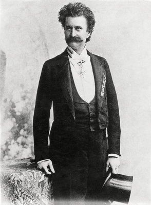

<!--  ============================================ -->
<!-- ; Title: about.component.html-->
<!-- ; Author: Professor Krasso-->
<!-- ; Date: 18 July 2020 -->
<!-- ; Modified By: Joann Saeou -->
<!-- ; Description:  Demonstrates  how to use routing in angular-->
<!-- ; =========================================== -->


<div class="container-fluid">

    <div class="row">

        <div class="col-sm-12">


            
<h2> 
    The best of Johann Strauss II  
      </h2> <q> 1825-1899</q>
<q> <br/>  
</q>

<article>
    <br/>
    <p> Johann Strauss is also known as <span> Johann Strauss II</span> and he was born in the 1825 century at <span>Vienna Austria.</span> </p>   
   
    <p> Strauss has formed his own band and has found out that he has been competing with his father in a musical orchestra . </p>
    <p> Johann Strauss is famous for his<span>  waltzes, polkas, mazurkas, and quadrilles.</span> </p>
    <p> In the year of <span>1853,</span> Strauss fell ill, and because of that, his younger brother took over the orchestra for 6 months straight.</p>
           <p> After recovering from his illness, he has dived back into conducting and composing activities-- and that dive has caught the  attentions of <span>Johannes Brahms and Giuseppe Verdi</span>. </p>
    


</article>
</div>


    </div>


</div>